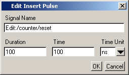
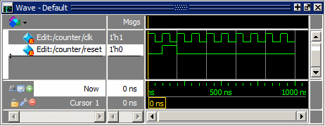
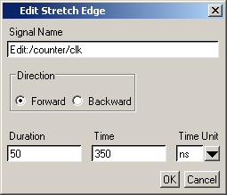
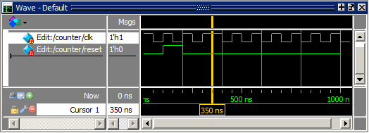
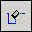
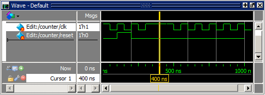

Waveform
Editor gives you numerous commands for interactively editing waveforms
(for example, invert, mirror, stretch edge, cut, paste, and so on).
You can access these commands through the menus, toolbar buttons,
or through keyboard and mouse shortcuts. You will try out several
commands in this part of the exercise.
Procedure
- Insert
a pulse on signal reset.
- Click
the Wave window title bar to make the Wave window active.
- Click
the Edit Mode icon in the toolbar.
- In
the Wave window Pathnames column, click the reset signal
so it is selected.
- Click
the Insert Pulse icon in the Wave Edit Toolbar. (Refer to the GUI Reference Manual for more information
on the Wave Edit Toolbar.)
Or,
in the Wave window, right-click the reset signal
waveform (not the pathname or value) and select .
- In
the Edit Insert Pulse dialog box, enter “100” in the Duration field
and “100” in the Time field (Figure 1), and click OK.
Figure 1. Edit Insert Pulse
Dialog Box
The reset signal now
goes high from 100 ns to 200 ns (Figure 2).
Figure 2. Signal reset with
an Inserted Pulse
- Stretch
an edge on signal clk.
- Select
the clk signal by clicking its name in the
Pathnames column.
- In
the waveform pane, click the clk waveform slightly
to the right of the transition at 350 ns of the signal clk.
The cursor should snap to the transition at 350 ns. If the yellow
cursor line is not visible, click anywhere in the cursor timeline
to move the cursor into the current view.
- Right-click
that same transition and select from the popup
menu.
If
the command is dimmed out, the cursor probably is not on the edge
at 350 ns.
- In
the Edit Stretch Edge dialog box, enter 50 for Duration, make sure
the Time field shows 350, and then click OK (Figure 3).
Figure 3. Edit Stretch Edge
Dialog Box
The
wave edge stretches so it is high from 300 to 400 ns (Figure 4).
Figure 4. Stretching an Edge
on the clk Signal
Note
the difference between stretching and moving an edge — the Stretch
command moves an edge by moving other edges on the waveform (either
increasing waveform duration or deleting edges at the beginning
of simulation time); the Move command moves an edge but does not
move other edges on the waveform. You should see in the Wave window
that the waveform for signal clk now extends
to 1050 ns.
- Delete
an edge.
- Click
the clk waveform to the right of the transition
at 400 ns. The cursor should snap to 400 ns.
- Click
the Delete Edge icon. 
This
opens the Edit Delete Edge dialog box. The Time is already set to
400 ns. Click OK. The edge is deleted and clk now
stays high until 500 ns (Figure 5).
Figure 5. Deleting an Edge on
the clk Signal